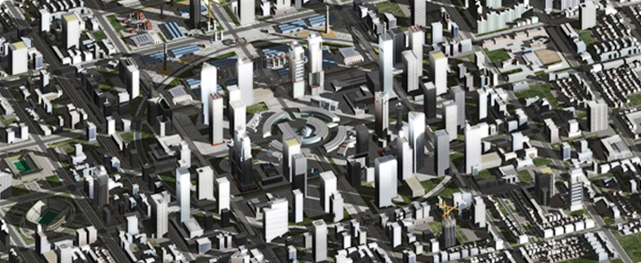

2009
Rhino3D, Grasshopper, 3ds max
Throughout history, although houses where people spend most of their time
have become diverse forms according to their usage,
the shapes have rarely changed.
Hence, a primary design mass can be simulated by procedures of experiments,
causing diverse outcomes for architectural design.



|